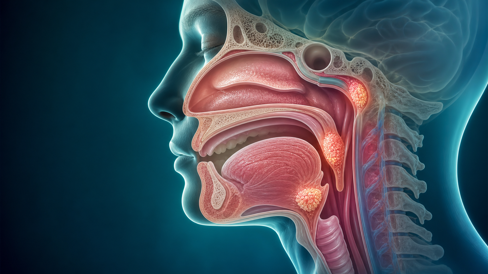
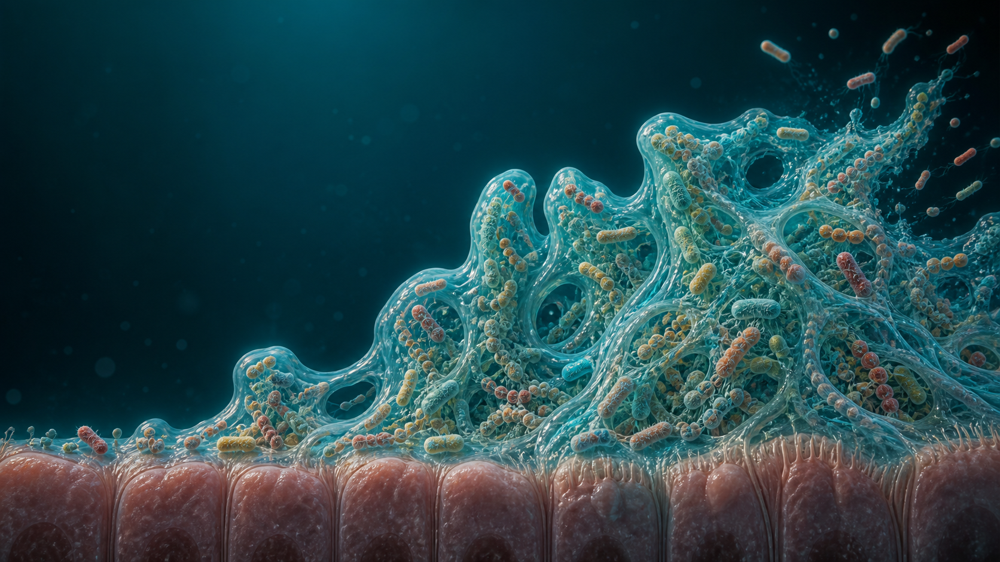
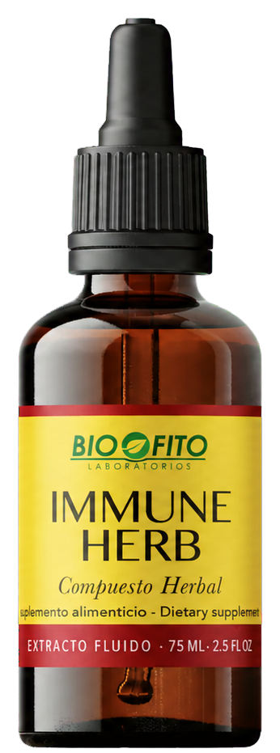
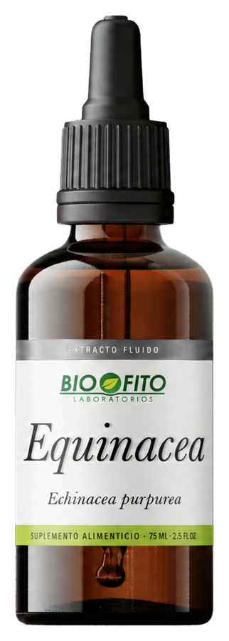
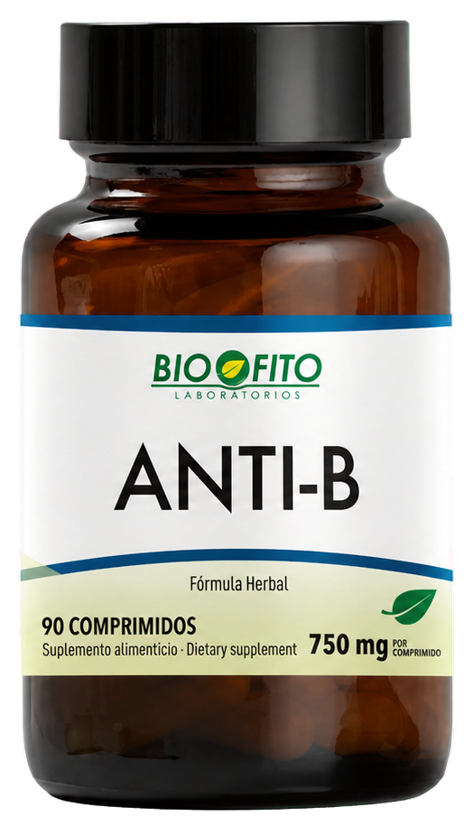
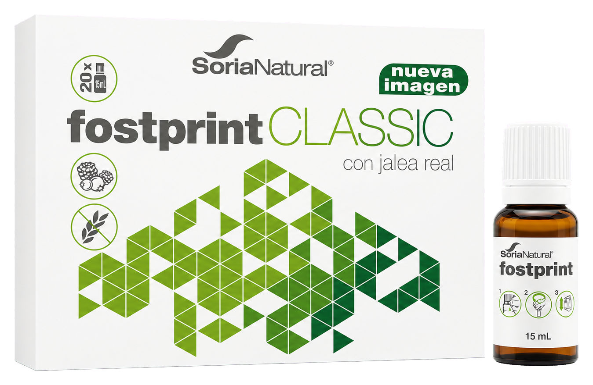

La aduana
inmunológica
Cómo reconoce, responde y recupera el equilibrio nuestra defensa mucosa.
¿Cómo decide el organismo frente a qué responder, con qué intensidad y durante cuánto tiempo?
La inmunidad saludable no vive con la alarma encendida.
Nariz, boca y garganta están “dentro” de nosotros… pero siguen abiertas al exterior.

El anillo de Waldeyer vigila el cruce entre respirar e ingerir.
Más superficie para inspeccionar lo que llega.
Las criptas acercan antígenos al epitelio y a las células que procesan información.
Antes de atacar, la mucosa intenta contener y retirar.
Epitelio que separa, detecta y comunica.
Moco y cilios desplazan partículas atrapadas.
Lisozima, lactoferrina, defensinas y más.
IgA y memoria reconocen sin incendiar la frontera.
Excluir puede ser más inteligente que inflamar.
La IgA neutraliza, aglutina y dificulta la adhesión a la superficie.
Capturar · desplazar · neutralizar · identificar · responder · recordar
“Defensas” no es una sola función.
La pregunta no es cuánto responde.
Es cómo se regula.
Usamos “set point” como modelo educativo, no como una medición clínica del MALT.
Una respuesta puede fallar en momentos diferentes.
Cuánta señal hace falta para iniciar.
Qué tan grande se vuelve la respuesta.
Qué tan bien limpia, repara y se detiene.
Responder bien también significa saber terminar.
¿Dónde se atasca tu aduana?
Puntúa cada frase del 0 al 3 pensando en el último mes.
Aire seco, polvo, humo, irritantes o exposición continua aumentan el trabajo antes de la respuesta inmunitaria.
¿Qué está alterando la entrada?
La primera señal se reconoce tarde o aparece en semanas con sueño corto, estrés y mayor exposición.
¿Qué ocurría antes de sentirme mal?
La alarma se mantiene, la molestia regresa o la respuesta no parece completar su resolución.
¿Qué mantiene encendida la señal?
La fase intensa termina, pero energía, sueño y alimentación todavía no regresan a su línea de base.
¿Qué recurso necesito proteger?
“La irritación disminuye, regresa unos días después y no puedo explicar qué la empeora.”
C organiza la pregunta. No confirma una infección ni un biofilm.

El biofilm es una arquitectura.
Una comunidad adherida, coordinada y rodeada por su propia matriz.
No es solo “pegamento”.
Crea microambientes.
La fortificación se construye por etapas.
Cada etapa abre un blanco diferente para investigación antibiofilm.
Sobrevivir no siempre significa lo mismo.
Resistencia
El microorganismo puede crecer a pesar de una sustancia, con frecuencia mediante mecanismos heredables.
Tolerancia
Sobrevive temporalmente por protección de matriz, metabolismo lento o células persistentes.
Una prueba contra bacterias libres no demuestra el mismo efecto contra un biofilm maduro.
Interferir con la organización,
no prometer erradicación.
“Funciona en laboratorio” no termina la investigación.
Cinco productos.
Cinco momentos del proceso.
Vigilancia · primera señal · organización microbiana · recursos · resolución




Immune Herb
+ Equinácea
Astrágalo · equinácea · cúrcuma · shiitake · maca · Uncaria tomentosa · mapurite
Anti-B
Equinácea · caléndula · tomillo · cúrcuma · jengibre · Uncaria tomentosa
Fostprint Classic
Jalea real, propóleo, vitaminas y minerales.
Sostén durante la recuperación.
Resverasor
Resveratrol de uva negra.
Adhesión, comunicación y virulencia: evidencia principalmente experimental.
El kit acompaña condiciones alrededor del proceso.
No mueve una sola perilla del MALT.
Barrera · vigilancia · organización microbiana · recursos · resolución
Convierte el perfil en una observación útil.
Identifica
¿Frontera, vigilancia, persistencia o recuperación?
Observa
¿Qué señal, exposición o cambio aparece primero?
Actúa
Elige una acción visible para los próximos siete días.
La salud no consiste en vivir con la alarma encendida.
Consiste en responder con precisión y recuperar la calma cuando el trabajo terminó.
Nos vemos la próxima semana.